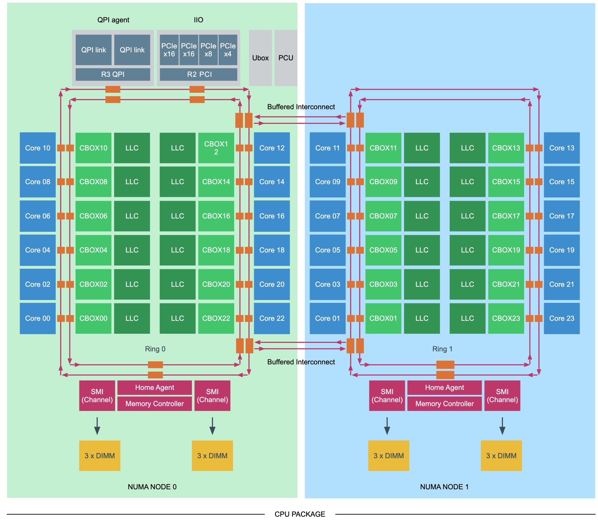

NUMA DEEP DIVE PART 3: CACHE COHERENCY
https://frankdenneman.nl/2016/07/11/numa-deep-dive-part-3-cache-coherency/
cache coherency目的是解决多个cpu cores之间的cache一致性，这类NUMA在研究材料中叫做ccNUMA. 在现代多核CPU架构下面，我们不仅要维护cpu package内部cores的一致性，还需要维护cpu package/socket之间的一致性。
To ensure that the local cache is up to date, the snoopy bus protocol was invented, which allowed caches to listen in on the transport of these “variables” to any of the CPU and update their own copies of these variables if they have them. The interesting thing is that with today’s multicore CPU architecture, cache coherency manifest itself within the CPU package as well as cache coherency between CPU packages. A great deal of memory performance (bandwidth and latency) depends on the snoop protocol.
CPU Cache延迟大约如下：
- L1 4 cycles
- L2 12 cycles
- L3 26-31 cycles. 这个可能和Ring Bus上的hop有关系
- local memory 190 cycles
- remote memory 310 cycles
Cache snoop 协议可能有许多种实现，最常见的就是MESI，在MESI上改进的有MESIF(Forward). Forward解决的问题就是为了避免所有的Shared状态的cores/caches都进行响应， 而只选择某一个代表进行响应，减少ring bus上的traffic.
Snoop模式文章里面列举了许多种（我都有点看不太懂），可能最常见的就是Cluster-on-Die这种模式：在一个CPU package里面将cores分为两个相同的NUMA node，但是这两个NUMA nodes之间的距离肯定比CPU sockets之间的距离要近。Home Agent来负责NODE内部和之间的一致性。

Cluster-on-Die (COD) is only available on MCC and HCC die design packages. When enabling COD, it logically divides the CPU into two equal NUMA node, incorporating a part of the scalable ring on-die Interconnect that services the home agent & integrated memory controller. In the MCC and HCC die design, there are two active memory controllers, each servicing two channels. The NUMA nodes are associated with the respective controllers.